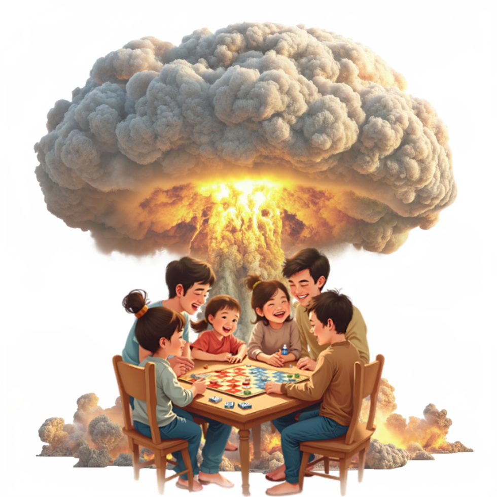

<!doctype html>
<html lang="en">
<head>
<meta charset="utf-8">
<meta name="viewport" content="width=device-width, initial-scale=1">
<title>Nuking Catan — Moddable.Games</title>
<link rel="stylesheet" href="../../colors_and_type.css">
<link rel="icon" type="image/png" href="../../assets/moddable-logo.png">
<style>
  html, body { margin: 0; padding: 0; background: #f5f4ef; }
  body { font-family: var(--mg-font-body); color: var(--mg-ink); }
  * { box-sizing: border-box; }
  em { font-style: italic; }
  button:focus-visible, a:focus-visible { outline: 2px solid #6fb5ff; outline-offset: 3px; }

  /* Article prose */
  .prose { font-family: var(--mg-font-body); font-size: 19px; line-height: 1.65; color: var(--mg-body); max-width: 680px; }
  .prose p { margin: 0 0 24px; }
  .prose p.lede { font-size: 24px; line-height: 1.5; color: var(--mg-ink); }
  .prose h2 { font-family: var(--mg-font-display); font-weight: 600; font-size: 32px; line-height: 1.15; letter-spacing: -0.4px; margin: 40px 0 16px; color: var(--mg-ink); }
  .prose blockquote { margin: 32px 0; padding: 20px 24px; border-left: 4px solid #d11a1a; background: #fff; font-style: italic; color: var(--mg-ink); font-size: 20px; line-height: 1.5; }
  .prose ul { padding-left: 22px; margin: 0 0 24px; }
  .prose li { margin: 0 0 8px; }
</style>
</head>
<body>

<div id="root"></div>

<script src="https://unpkg.com/react@18.3.1/umd/react.development.js" integrity="sha384-hD6/rw4ppMLGNu3tX5cjIb+uRZ7UkRJ6BPkLpg4hAu/6onKUg4lLsHAs9EBPT82L" crossorigin="anonymous"></script>
<script src="https://unpkg.com/react-dom@18.3.1/umd/react-dom.development.js" integrity="sha384-u6aeetuaXnQ38mYT8rp6sbXaQe3NL9t+IBXmnYxwkUI2Hw4bsp2Wvmx4yRQF1uAm" crossorigin="anonymous"></script>
<script src="https://unpkg.com/@babel/standalone@7.29.0/babel.min.js" integrity="sha384-m08KidiNqLdpJqLq95G/LEi8Qvjl/xUYll3QILypMoQ65QorJ9Lvtp2RXYGBFj1y" crossorigin="anonymous"></script>

<script type="text/babel" src="../marketing/Buttons.jsx"></script>
<script type="text/babel" src="../marketing/NavBar.jsx"></script>
<script type="text/babel" src="../marketing/Footer.jsx"></script>
<script type="text/babel" src="posts.jsx"></script>

<script type="text/babel">

function PostHeader() {
  return (
    <section style={{ position: "relative", color: "#fff", overflow: "hidden", background: "#000" }}>
      {/* Red ground glow keyed to the Catan/Nuke theme */}
      <div style={{ position: "absolute", left: "50%", bottom: -200, transform: "translateX(-50%)", width: 1100, height: 500, background: "radial-gradient(ellipse, rgba(209,26,26,0.4) 0%, transparent 65%)", pointerEvents: "none", filter: "blur(20px)" }} />

      <div style={{ position: "relative", padding: "48px 32px 88px", maxWidth: 800, margin: "0 auto", textAlign: "center" }}>
        <a href="index.html" style={{ fontFamily: "var(--mg-font-mono)", fontSize: 12, color: "rgba(255,255,255,0.7)", textDecoration: "none" }}>← All posts</a>

        <div style={{ display: "flex", gap: 8, justifyContent: "center", marginTop: 28, flexWrap: "wrap" }}>
          <span style={{ fontFamily: "var(--mg-font-body)", fontWeight: 600, fontSize: 11, background: "#d11a1a", color: "#fff", padding: "4px 10px", borderRadius: 9999, letterSpacing: "0.3px" }}>CATAN</span>
          <span style={{ fontFamily: "var(--mg-font-mono)", fontSize: 11, color: "rgba(255,255,255,0.7)", padding: "4px 10px", border: "1px solid rgba(255,255,255,0.18)", borderRadius: 9999 }}>Sep 12, 2025  ·  6 min read</span>
        </div>

        <h1 style={{
          fontFamily: "var(--mg-font-display)",
          fontWeight: 600,
          fontSize: "clamp(48px, 7vw, 96px)",
          lineHeight: 0.95,
          letterSpacing: "-0.025em",
          margin: "24px 0 24px",
          textShadow: "0 4px 30px rgba(0,0,0,0.6)",
        }}>
          Nuking <em style={{ color: "#e63232" }}>Catan</em>.
        </h1>

        <p style={{
          fontFamily: "var(--mg-font-body)",
          fontStyle: "italic",
          fontSize: 18,
          color: "rgba(255,255,255,0.78)",
          margin: 0,
        }}>
          A meditation on the gateway game, 45 million boxes deep — and what we did to it.
        </p>
      </div>
    </section>
  );
}

function PostBody() {
  return (
    <section style={{ background: "#f5f4ef", padding: "72px 32px 96px" }}>
      <div style={{ maxWidth: 1200, margin: "0 auto", display: "grid", gridTemplateColumns: "200px 1fr 220px", gap: 56, alignItems: "start" }}>

        {/* Left rail — author + share */}
        <aside style={{ position: "sticky", top: 96 }}>
          <div style={{ fontFamily: "var(--mg-font-pixel)", fontSize: 9, color: "#0c4f8d", letterSpacing: "1.5px", marginBottom: 14 }}>▲ AUTHOR</div>
          <div style={{ display: "flex", gap: 10, alignItems: "center", marginBottom: 20 }}>
            <div style={{ width: 40, height: 40, borderRadius: 9999, background: "linear-gradient(135deg, #d11a1a, #0c4f8d)", flex: "none" }} />
            <div>
              <div style={{ fontFamily: "var(--mg-font-display)", fontWeight: 600, fontSize: 15, color: "#14161c", letterSpacing: "-0.2px" }}>ascelot</div>
              <div style={{ fontFamily: "var(--mg-font-mono)", fontSize: 11, color: "#7a8290" }}>@ascelot · moddable team</div>
            </div>
          </div>
          <div style={{ fontFamily: "var(--mg-font-pixel)", fontSize: 9, color: "#3a9928", letterSpacing: "1.5px", marginTop: 32, marginBottom: 12 }}>▲ SHARE</div>
          <div style={{ display: "flex", gap: 6, flexWrap: "wrap" }}>
            {["X", "FB", "LI", "Copy"].map(s => (
              <button key={s} style={{
                fontFamily: "var(--mg-font-mono)", fontSize: 11, fontWeight: 600,
                width: 38, height: 38, borderRadius: 9999,
                background: "#fff", color: "#14161c",
                border: "1px solid #e6e3d8", cursor: "pointer",
              }}>{s}</button>
            ))}
          </div>
        </aside>

        {/* Article */}
        <article className="prose">
          {/* Lead image — show the Nuke Catan family illustration */}
          

          <p className="lede">
            <em>Catan</em> is popular. By some accounts, it's the most popular game of the modern era — a gateway game that's sold over 45 million copies and introduced countless families to a life of board-games beyond Monopoly.
          </p>

          <p>
            It's a game that enforces interaction between players. No silent solo turns. No retreating to a corner with a deck of cards. Every roll is a negotiation, every settlement a quiet provocation. You can't win <em>Catan</em> without talking to the people you're trying to beat — which is, when you think about it, both its genius and its source of all known dining-table arguments.
          </p>

          <h2>So we set it on fire.</h2>

          <p>
            <em>Nuke Catan</em> is a total conversion of the base game. Same tiles, same dice, same little wooden settlers. Brand new economy.
          </p>

          <p>
            The premise: it's 2049. The island is now a contested post-nuclear wasteland. Sheep are extinct. Brick is currency. Wheat has been replaced by Rations. Wool by Scrap. And once per game, on your turn, you may — and probably should — play the Nuke card.
          </p>

          <blockquote>
            "You may play the Nuke card. Pick any hex. It produces no resources for the rest of the game."
          </blockquote>

          <p>The rule is short. The effect is permanent. And the ripple it sends through a four-player negotiation is, to put it mildly, instructive.</p>

          <h2>What we left intact.</h2>

          <ul>
            <li>The hex board. Same 19 tiles, same number tokens, same robber.</li>
            <li>The card decks. Resource cards are reskinned (Sheep → Scrap), but the development cards are untouched.</li>
            <li>The longest road and largest army awards. Both still grant 2 VP — they're just now competing with a Nuke economy.</li>
            <li>The trading mechanic. You can still bank-trade 4:1, port-trade 3:1, and player-trade however you want.</li>
          </ul>

          <h2>What you'll need.</h2>

          <p>
            Your standard <em>Catan</em> base game and four printable cards (PDF in the download). That's it. No new tiles, no replacement components, no expansions required. It's a pure rules patch — which is, frankly, the whole point of what we do.
          </p>

          <p>
            <em>Nuke Catan v2.1.0 is in open playtest. Download the rules, run it at your next table, and tell us how badly we've broken something on Discord.</em>
          </p>
        </article>

        {/* Right rail — TOC + mod link */}
        <aside style={{ position: "sticky", top: 96 }}>
          <div style={{ fontFamily: "var(--mg-font-pixel)", fontSize: 9, color: "#0c4f8d", letterSpacing: "1.5px", marginBottom: 14 }}>▲ IN THIS POST</div>
          <ul style={{ listStyle: "none", padding: 0, margin: "0 0 32px", display: "flex", flexDirection: "column", gap: 8, borderLeft: "1px solid #e6e3d8" }}>
            {["So we set it on fire", "What we left intact", "What you'll need"].map((t, i) => (
              <li key={t} style={{ paddingLeft: 14, borderLeft: i === 0 ? "2px solid #d11a1a" : "none", marginLeft: -1 }}>
                <a href="#" style={{ fontFamily: "var(--mg-font-body)", fontSize: 13, color: i === 0 ? "#14161c" : "#4f5764", textDecoration: "none", fontWeight: i === 0 ? 600 : 400 }}>{t}</a>
              </li>
            ))}
          </ul>

          <div style={{ background: "#000", color: "#fff", padding: 20, borderRadius: 16 }}>
            <div style={{ fontFamily: "var(--mg-font-pixel)", fontSize: 9, color: "#e63232", letterSpacing: "1.5px", marginBottom: 10 }}>▲ THE MOD</div>
            <div style={{ fontFamily: "var(--mg-font-display)", fontWeight: 600, fontSize: 18, lineHeight: 1.2, marginBottom: 6 }}>Nuke Catan</div>
            <div style={{ fontFamily: "var(--mg-font-mono)", fontSize: 11, color: "rgba(255,255,255,0.6)", marginBottom: 14 }}>v2.1.0 · Total Conversion</div>
            <Btn variant="red" style={{ height: 38, fontSize: 13, width: "100%" }}>Download rules</Btn>
          </div>
        </aside>
      </div>
    </section>
  );
}

function MorePosts() {
  const related = POSTS.slice(1, 4);
  return (
    <section style={{ background: "#fff", borderTop: "1px solid #e6e3d8", padding: "80px 32px" }}>
      <div style={{ maxWidth: 1200, margin: "0 auto" }}>
        <h2 style={{ fontFamily: "var(--mg-font-display)", fontWeight: 600, fontSize: 40, lineHeight: 1.1, letterSpacing: "-0.5px", color: "#14161c", margin: "0 0 32px" }}>
          More from the archive.
        </h2>
        <div style={{ display: "grid", gridTemplateColumns: "repeat(3, 1fr)", gap: 20 }}>
          {related.map(p => (
            <a key={p.slug} href="post.html" style={{
              display: "flex", flexDirection: "column", gap: 14,
              padding: 20, background: "#f5f4ef", borderRadius: 16,
              textDecoration: "none", color: "inherit",
            }}>
              <div style={{ height: 120, background: `linear-gradient(135deg, #0a0d2a 0%, ${p.cover} 100%)`, borderRadius: 12 }} />
              <div style={{ fontFamily: "var(--mg-font-mono)", fontSize: 11, color: "#7a8290", letterSpacing: "0.3px" }}>{p.cat.toUpperCase()}  ·  {p.date}</div>
              <h3 style={{ fontFamily: "var(--mg-font-display)", fontWeight: 600, fontSize: 20, lineHeight: 1.2, letterSpacing: "-0.2px", color: "#14161c", margin: 0 }}>{p.title}</h3>
            </a>
          ))}
        </div>
      </div>
    </section>
  );
}

function App() {
  return (
    <div data-screen-label="News Post · Nuking Catan">
      <NavBar activeSection="News" />
      <PostHeader />
      <PostBody />
      <MorePosts />
      <Footer />
    </div>
  );
}

ReactDOM.createRoot(document.getElementById("root")).render(<App />);
</script>

</body>
</html>
